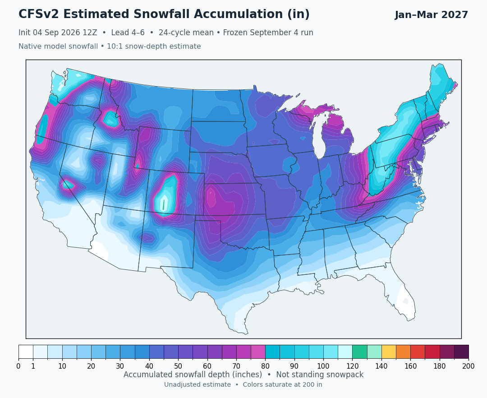

Native snowfall estimate
Experimental snapshot · Latest initialization: September 4, 2026 12Z
24 forecast cycles, August 29 18Z–September 4 12Z · Fixed run; does not refresh automatically.
Loading map…

{kind=link}
Unadjusted model estimate: high totals remain possible. Snowfall depth uses a fixed 10:1 snow-to-liquid ratio. A matching native climatology is unavailable, so this page does not show departures from normal.
How the estimate is made
Native CFSv2 surface snowfall rate (SRWEQ, kg m⁻² s⁻¹) is integrated over each calendar month and averaged across the same 24 forecast cycles. Snowfall water equivalent in inches is multiplied by 10 to estimate accumulated snowfall depth in inches. JFM is the sum of January, February and March. These are snowfall accumulations, not standing snowpack depth. Native input does not remove model bias or establish forecast skill.
Coverage, colors and downloads
The map covers CONUS with the same 10:1 ratio everywhere. Amounts below 1 inch are white. Colors saturate at 200 inches; larger values are retained in the numerical grid. The map uses bilinear sampling, which does not add meteorological resolution. Downloads include estimated snowfall depth and the original snowfall water equivalent, identified separately.
Source and provenance
Native source records, hashes and conversion method
These are the retained September 4 inputs, re-rendered at 10:1. This frozen snapshot does not refresh automatically. It is separate from the automatic model suite and its phase-derived snowfall departures. Do not subtract those departures from this accumulation to infer a normal.